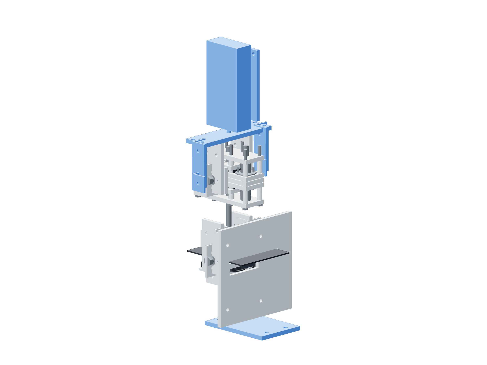

Dry commissioning / powered force154 / 179
Build the powered force fixture
The spare short screw and metal fork put the gauge in series with the shuttle while the fixed drive foot reacts independently to the bench.
AddSpare 200 mm TR8×2 screw · test foot · two output arms / bridge · graded link · accepted driver profile
Tools / setupVertical gauge backing / vise · independently clamped drive foot · recorded force uncertainty

- Remove the vessel and real gun; leave every gravity load supported. Clamp the fixed metal test foot independently to the table.
- Fit the spare screw and selected graded link. Attach both fork arms only to the shuttle, outside the fixed cage, with the bridge ahead of the screw tip.
- Clamp the gauge backing vertically with its load axis down; its compression button contacts the bridge center.
- Meter the link’s two overload contacts and verify the force path has no rigid output/cage bypass. Reverse the cartridge and fork to test the other sign.
Ready when
Drive-foot reaction and gauge/output reaction are separate, the fork clears fixed ties and the gauge reads the complete output force. A bridging clamp, off-axis gauge or unsupported fixed foot invalidates powered force measurement. Correct that fixture before motion.